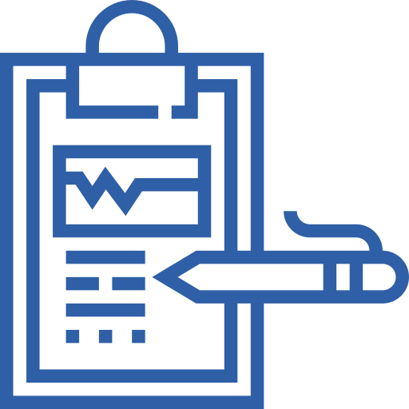
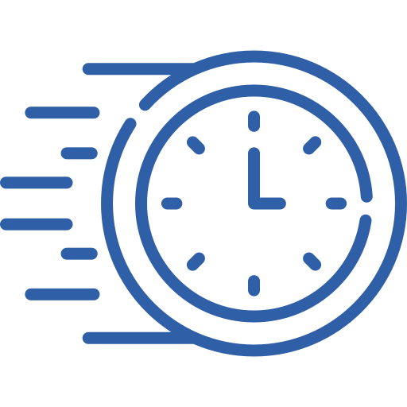

Imágenes Diagnósticas
Estudios con tecnología de alta calidad
Contamos con equipos de imagenología modernos para ecografías, mamografías y otros estudios diagnósticos que ofrecen resultados precisos con una atención cálida y profesional.
Servicios incluidos
- Ecografía abdominal, pélvica, mamaria y obstétrica.
- Mamografía digital y estudio de densitometría ósea.
- Radiografías básicas y especializadas.
- Interpretación por radiólogos certificados.
¿Por qué elegirnos?

Diagnóstico preciso
Equipos de alta resolución para pruebas confiables.

Resultados rápidos
Informes entregados en el tiempo adecuado para tu cuidado.
Acompañamiento médico
Asesoría para tus exámenes y seguimiento de resultados.
Preparación para tu estudio
Algunos estudios requieren ingesta de agua o ayuno previo. Lee las instrucciones antes de tu cita y trae resultados anteriores cuando los tengas para una mejor interpretación.